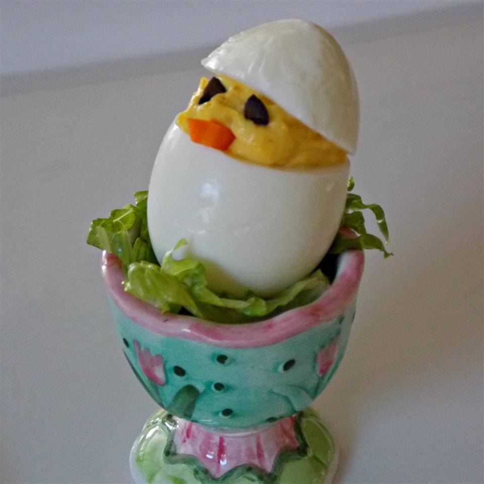

Easter Chick Deviled Eggs

Ingredients
- 12 hard-boiled eggs, peeled
- 2 tablespoons mayonnaise
- ½ tablespoons yellow mustard
- 1 dill pickle, finely chopped
- 1 tablespoon prepared horseradish, or to taste
- 1 teaspoon pickle juice
- salt and ground black pepper to taste
- 1 carrot, cut into rounds
- 12 slices canned black olives, or as needed
Steps
- Slice through the top 1/3 of each egg, ensuring some
of the yolk is included in the slice. Carefully remove the
egg yolk from the bottom portion of the egg using a spoon
and transfer to a bowl.
- Mix egg yolks, mayonnaise, mustard, pickle, horseradish,
pickle juice, salt, and pepper together in a bowl. Fill a piping
bag or a plastic bag with a corner snipped with the egg yolk mixture.
Pipe egg yolk mixture into the hollowed egg whites creating the 'chick',
ensuring there is enough filling to add 'eyes' and a 'beak.'
- Slice small wedges out of the carrot rounds creating 12 'beaks'. Add a 'beak' to each 'chick'.
- Slice olive pieces into small squares to be used as 'eyes.' Add 2 'eyes' to each 'chick.' Place the
egg tops onto each 'chick' to look like a chick peaking out of the egg.